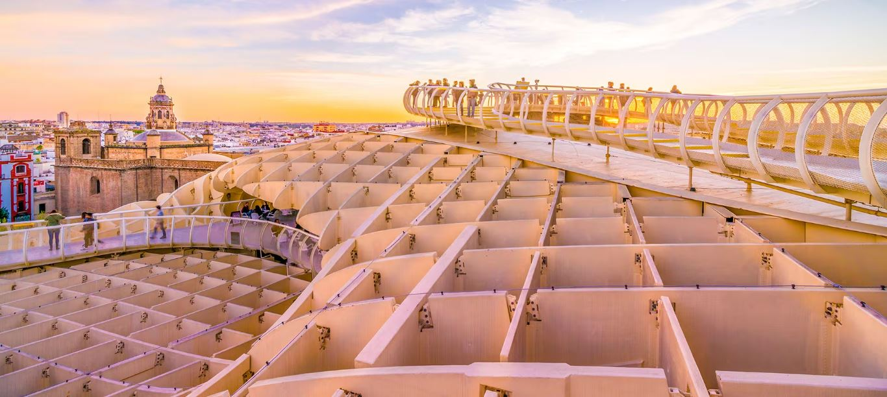
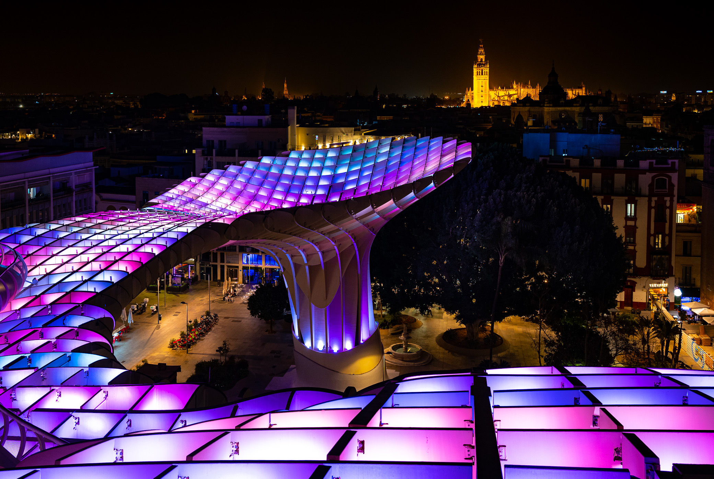

-

- 
- 


Monumentos de Sevilla
Las Setas
Metropol Parasol
Tiene unas dimensiones de 150 x 70 metros y una altura aproximada de 26 metros, y fue el proyecto ganador del concurso abierto por el Ayuntamiento de Sevilla para llevar a cabo la rehabilitación de la plaza en la que se ubica; su diseñador fue el arquitecto berlinés Jürgen Mayer. La estructura consiste en seis parasoles con forma de setas de grandes dimensiones, cuyo diseño se inspira en las bóvedas de la catedral de Sevilla y los ficus de la cercana plaza del Cristo de Burgos.
En su conjunto dispone de cinco niveles. El nivel superior alberga una plaza mirador y un trayecto panorámico que sobre plataformas recorre la mayor parte del conjunto. En el interior de los parasoles centrales, a 22 metros de altura, se sitúa un restaurante de tapas y espacio para eventos. Bajo los parasoles se ubica una plaza elevada, umbría y diáfana (Plaza Mayor) diseñada para albergar eventos de distinto carácter. A nivel de suelo se encuentra el actual Mercado de la Encarnación, junto con locales comerciales y de restauración.
Finalmente, el sótano alberga el museo Antiquarium, en el que se exhiben los restos arqueológicos hallados en el lugar. Este Antiquarium fue proyectado por el arquitecto sevillano Felipe Palomino González, que participó en toda la dirección de obra del proyecto mayor.

 DIRECCION Y DATOS DE CONTACTO
DIRECCION Y DATOS DE CONTACTO
Direccion: Plaza de la Encarnación, s/n
41013 Sevilla (Andalucía)
E-mail: info@setasdesevilla.com
E-mail: setasdesevilla@sacyr.com
Tlf: +34 606 635 214
Tlf: +34 954 561 512
web: http://www.setasdesevilla.com
web: https://www.andalucia.org/es/sevilla-turismo-cultural-metropol-parasol